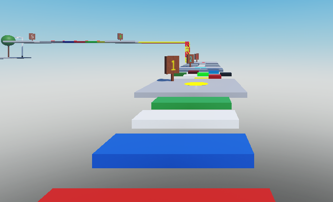
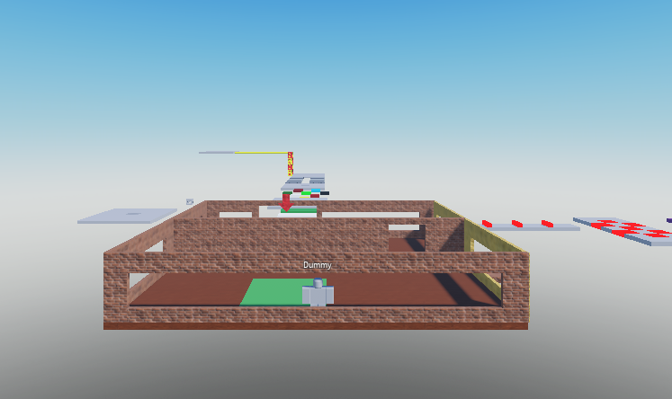

i called this game happy obbies i started with the obby template and used the things in there to build the obby in my own style
| template | work in process | after i edited it |
|---|---|---|
|
|
|
now the player shouldnt know wich level he is playing so i added some invisible parts with an big number on it but later i made a neat level sign
| before | after |
|---|---|
 |
 |
i also made an lobby i improved it alot from the first time with beter lightning i also added 2 extra parts to it an premium lobby and an door with an password to collect event bonusses
| work in process | before | after | ||||||
|---|---|---|---|---|---|---|---|---|
|  | ||||||||